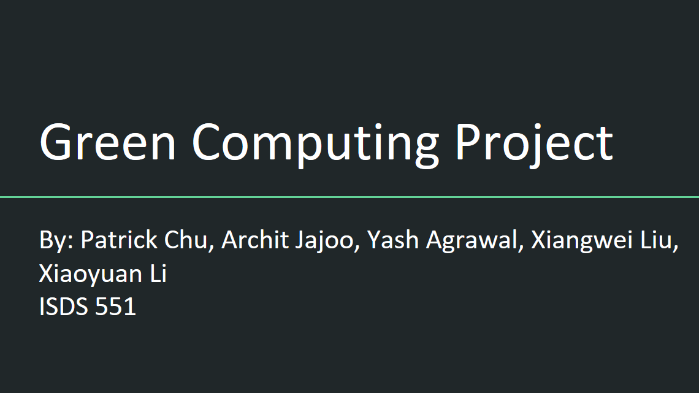

Toggle navigation
YASH AGRAWAL
Resume
Portfolio
Contact
The Process of Management- Green Computing Research Project
Portfolio
Project 5
Project Details
Researched on Green Computing and Green projects by large organizations such as IBM, Google, Apple and investigated the Return on Investment (ROI)
Developed and Reviewed the work breakdown structure (WBS), Gantt Chart & network diagram using Microsoft Project 2013
Identified five milestones for the project and described them using the SMART criteria
Estimated the task durations, dependencies and reorganized the Gantt Chart as a part of Project Time Management
Devised Contingency strategies assuming various scenarios to avoid time mismanagement and schedule slips in the future
Designed Presentation and Report including all the four parts of management and provided recommendations and corrective actions
Project Presentation
Click on link to view the presentation
